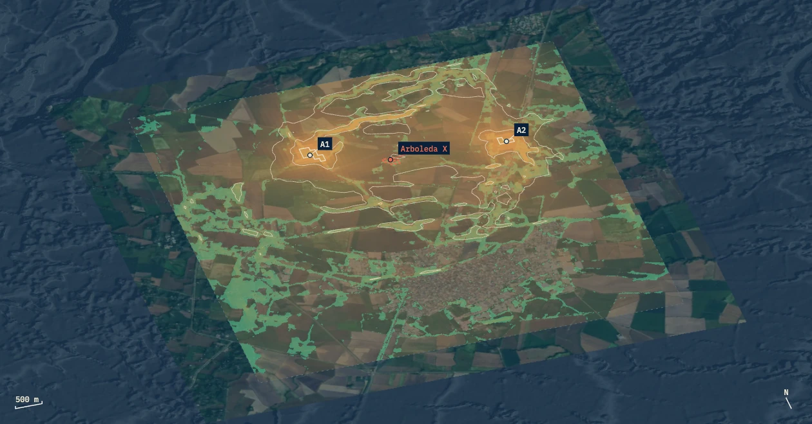
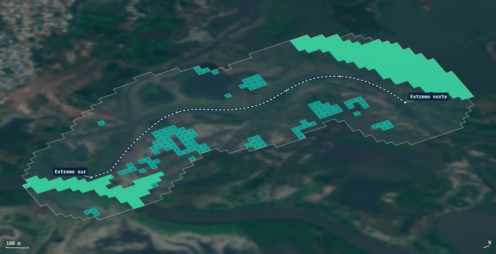

Para recuperar un lindero, manejar una floración o intervenir un caño hace falta saber qué ocurre allí. Tres lugares muestran qué medir, quién usaría el resultado y qué decisión podría cambiar.
El Espinal, Tolima · Arbolado WorldCover 2021
¿Por qué claro podría cruzar un ave?
Entre dos arboledas de El Espinal se extiende un mosaico de cultivos. El mapa ensaya dónde podría concentrarse el paso si atravesar un claro costara más que seguir entre árboles. Para saber cómo cruza un ave habrá que observarla allí.

Antes del retiro · Par A
Arbolado de 2021 · Corriente simulada entre los dos extremos
Una gobernación o una empresa puede concertar con los predios una visita a dos franjas, una de corriente alta y otra de corriente baja. Con el mismo esfuerzo y en la misma temporada, el equipo puede registrar cruces de una especie focal, ancho de los claros y continuidad de las copas. El contraste permite decidir si vale la pena invertir en una segunda campaña.
Qué representa cada capa y cómo comprobar el resultado
En esta ventana de 6.416,01 ha, WorldCover registra 1.290,40 ha de arbolado. La huella X abarca 3,24 ha y contiene 1,93 ha arboladas. La huella Y abarca 9,72 ha y contiene 8,75 ha arboladas. Los retiros tienen tamaños distintos. El verde señala muestras de 10 m que WorldCover clasificó como arbolado en 2021. Al tocar el mapa, el inspector indica qué proporción de cada celda del circuito corresponde a esa clase. La imagen de 2024 ayuda a reconocer el terreno. La cámara oblicua conserva la posición de celdas y arboledas sobre el relieve.
Cada celda de 90 m reúne 81 muestras de 10 m. Los extremos A1 y A2 pertenecen al cruce norte y B1 y B2 al sur. X e Y son arboledas intermedias elegidas para ensayar su retiro. La corriente expresa cómo se reparte una unidad de flujo del modelo entre dos extremos fijos. La vista «Diferencia» resta el campo inicial al campo después del retiro, celda a celda. Los campos inicial y final comparten una escala que se satura en el percentil 99 del conjunto. Las isolíneas claras unen celdas de igual intensidad. En la diferencia, el trazo coral discontinuo marca pérdida y el claro continuo marca ganancia. Con igual costo de paso en toda la ventana, los cuatro retiros dan cambio cero. Las fechas, la presencia de animales y la conducta de una especie requieren observaciones de campo.
En el par norte basta cambiar cuánto cuesta cruzar el terreno abierto para que X e Y intercambien su lugar. En el sur, retirar Y produce el mayor aumento de resistencia en los tres escenarios que distinguen el arbolado.
Aumento de la resistencia efectiva tras retirar cada arboleda (%)
● Retirar X◆ Retirar Y
NortePar A · escala 0 a 0,08 %SurPar B · escala 0 a 0,80 %
El eje horizontal muestra los cuatro costos relativos ensayados. La escala vertical del norte está ampliada diez veces para poder leer diferencias inferiores a 0,08 %.
El mapa de arriba usa 10×. Estos controles cambian solo la lectura de la gráfica.
Con el supuesto del mapa, retirar Y eleva la resistencia del par sur un 0,512 %. En el norte, X produce el mayor cambio, 0,066 %. La visita tendría que contrastar la facilidad de cruce antes de elegir una arboleda.
Cuando todo el terreno tiene el mismo costo de cruce, retirar X o Y deja igual la resistencia de ambos pares. Este escenario permite comprobar el punto de partida.Con un costo de cruce tres veces mayor fuera del arbolado, X pesa más en el norte (0,045 %) e Y en el sur (0,228 %). La ubicación de las terminales ya cambia la pregunta de campo.Con el supuesto del mapa, retirar Y eleva la resistencia del par sur un 0,512 %. En el norte, X produce el mayor cambio, 0,066 %. La visita tendría que contrastar la facilidad de cruce antes de elegir una arboleda.Al elevar el costo a treinta veces, Y pasa a ocupar el primer lugar también en el norte. Allí la diferencia entre retiros es apenas 0,006 puntos porcentuales. En el sur, retirar Y eleva la resistencia un 0,694 %.
Consultar cifras, superficies y método
X reúne 1,93 ha clasificadas como arboladas e Y reúne 8,75 ha. Cada retiro simula la pérdida completa de la cobertura arbórea de esa pieza. Comparar su efecto por hectárea requeriría ensayar retiros de superficie equivalente.
Aumento de resistencia efectiva respecto al escenario sin retiro
Costo relativo
Norte · par A
Sur · par B
Retiro X
Retiro Y
Retiro X
Retiro Y
1×
0,000 %
0,000 %
0,000 %
0,000 %
3×
0,045 %
0,024 %
0,007 %
0,228 %
10×
0,066 %
0,056 %
0,011 %
0,512 %
30×
0,071 %
0,077 %
0,012 %
0,694 %
Cada porcentaje expresa la diferencia entre las resistencias con y sin retiro, dividida por la resistencia sin retiro al mismo costo. Las líneas unen cuatro ensayos discretos. Para decidir dónde invertir queda por medir cómo cruza el receptor biológico en ese terreno.
Fuente · ESA WorldCover 2021 v200. Graph of Life calculó estos retiros para orientar una visita de campo. La resistencia al cruce sigue pendiente de medición local. Descargar el catálogo de escenarios
El Espinal · Bosques de 2024
La otra orilla del mapa
Los bosques 82 y 65 ocupan 5,22 hectáreas cada uno. El 82 queda a 180 metros del borde de la ventana original. Si el paisaje continúa por fuera del mapa, ¿cuál conviene visitar primero?
Contexto regional · Copernicus GLO-90
Pérdida al retirar cada bosque Hectáreas equivalentes de conectividad · Distancia de cruce supuesta de 450 m
13,50 ha equivalentes de diferencia
Retirar el 82 restaría 18,49 ha equivalentes, frente a 4,99 al retirar el 65.
0,56 ha equivalentes de diferencia
Retirar el 65 restaría 4,68 ha equivalentes, frente a 4,12 al retirar el 82.
18,49
4,99
Las cifras y el cambio de encuadre
Pérdida en hectáreas equivalentes de conectividad
Bosque retirado
Original
Con margen exterior
Bosque 82
18,49
4,12
Bosque 65
4,99
4,68
Los cálculos cuentan el área de los 106 fragmentos originales en ambos encuadres. En la ventana ampliada, el bosque exterior puede conectar dos piezas del interior. Cada trazo une los dos cálculos disponibles.
La proximidad del 82 al borde aconseja recorrer también el entorno exterior antes de escoger un lindero. Para contrastar la distancia de cruce supuesta, harían falta observaciones de animales en los claros.
El ensayo con MapBiomas conserva los extremos 62–69 y 83–89 antes y después de retirar el 65 o el 82. Estos números identifican fragmentos de la cartografía de 2024. La escena WorldCover tiene otros extremos, otra fecha y otra clasificación.
Resistencia efectiva entre terminales fijos Perfil especialista · Enero de 2024 · Sin penalización vial
Al retirar el bosque 65 aumenta la resistencia entre el 62 y el 69.
Los cuatro contrastes y sus supuestos
Las resistencias representan una hipótesis de movimiento sobre celdas de 90 m. Se aplica una unidad de corriente con los mismos terminales antes y después de la retirada. La resistencia de cada arista toma el costo medio de las dos celdas multiplicado por 90 metros. La resistencia resultante se expresa en metros de costo del modelo. Los extremos se eligieron en los dos grupos mayores que quedan separados al retirar el 65 o el 82 en la red de 30 m. En cada grupo se fijó el bosque más cercano al retirado. El cambio porcentual compara la resistencia final con la inicial.
Al pasar de un radio de 450 a 810 metros, cada selección sigue teniendo 626 celdas. Lo que cambia es cuáles entran en ella. Ese recambio permite escoger lugares donde una visita pondría a prueba la escala de movimiento supuesta.
El décimo superior de corriente relativa Conteos de celdas de 90 m · Selección independiente en cada radio
El grosor de las bandas representa cuántas celdas comparten las selecciones.
63,1 % en ambos
395 de 626 celdas
De las 626 celdas que destacan a 450 m, 395 conservan su posición en el grupo superior a 810 m. Las otras 231 salen de la selección.
63,1 % en ambos
395 de 626 celdas
De las 626 celdas destacadas a 810 m, 231 aparecen por primera vez al ampliar el radio. Serían sitios para contrastar el supuesto de cruce más largo.
46,1 % en ambos
395 de 857 celdas
Los dos radios proponen 857 celdas distintas. De ellas, 395 fueron seleccionadas por el mismo criterio en ambos escenarios.
6,3 % en ambos
395 de 6.252 celdas
En 6.252 celdas con valores válidos del modelo, 395 destacan con ambos radios. En 5.395 la corriente queda por debajo de ambos cortes.
Comparar las bases y preparar una visita
Acuerdo entre los radios según el conjunto de referencia
Referencia
Celdas
En ambos
Radio de 450 m
626
63,1 %
Radio de 810 m
626
63,1 %
Al menos un radio
857
46,1 %
Área evaluada
6.252
6,3 %
Omniscape compara la corriente acumulada con una referencia de resistencia uniforme. El décimo superior se calculó por radio sobre las mismas 6.252 celdas válidas. Los conteos identifican el acuerdo del modelo. Para contrastarlo con animales, haría falta medir oportunidades de cruce y esfuerzo en sitios de acuerdo, discrepancia y corriente baja.
En una jornada de agosto, la red recogió 515 artrópodos en flores de dos variedades de mango. Los escarabajos dominaron ambas muestras. Lo que cambia al pasar de Hilacha a Tommy Atkins es el grupo que ocupa el segundo lugar.La red recogió 515 artrópodos en las flores. Los escarabajos dominaron ambas variedades. ¿Qué grupo ocupó el segundo lugar?
La red recogió una parte de los artrópodos presentes cuando pasó el equipo. Para quien cultiva o compra mango, importa cuánto polen llegó a la flor y qué fruta alcanzó la calidad de entrega. Con un registro por árbol y panícula se pueden seguir los frutos hasta la entrega. En flores de una muestra paralela se puede comprobar cuánto polen llegó al estigma.
Cómo se recogieron los ejemplares
Corredor y García trabajaron durante un día de agosto en Nataima. El estudio sitúa el seguimiento fenológico en 2009. En cada franja eligieron tres árboles por variedad y tres inflorescencias por árbol, con la mayoría de sus flores abiertas.
La colecta se organizó de 08:00 a 09:00, de 11:00 a 12:00, de 14:00 a 15:00 y de 17:00 a 18:00. Se desconoce si los árboles se repitieron entre franjas y cuánto tiempo pasó la red por cada inflorescencia. Los porcentajes se refieren a los individuos de la muestra seleccionada.
El equipo de Nataima describió el cuajado en un seguimiento aparte. Para estimar qué cambia en la cosecha cuando los visitantes tienen acceso a las flores, hace falta volver a las mismas panículas. La etiqueta que se pone durante la floración debe llegar con la fruta a la balanza.
Recorrido de campo propuesto
Visitas por flor y tiempo observado
¿Qué llega a una flor abierta?
Etiquete el árbol y la panícula de Hilacha o Tommy Atkins. En cada turno registre cuántas flores hermafroditas están abiertas, cuánto dura la observación, qué grupo llega y si toca el estigma. Así podrá comparar dos turnos aunque uno haya tenido más flores disponibles.
Granos de polen por estigma
¿Deja polen al pasar?
En una muestra paralela de flores vírgenes, permita una sola visita identificada y recoja después el estigma para contar el polen de mango. Compare con flores protegidas que hayan recibido el mismo manejo. Reserve las panículas marcadas para seguir el fruto.
Frutos iniciales por flor hermafrodita marcada
¿Cuántas flores inician un fruto?
Dentro de cada árbol asigne al azar panículas comparables a tres tratamientos. Deje unas abiertas, cubra otras con malla antes de la apertura y aporte polen compatible a un tercer grupo también abierto. Cuente los frutos iniciales a la misma edad desde la floración de cada variedad.
Kilogramos comercializables por panícula marcada
¿Cuánta fruta acepta el comprador?
Vuelva a cada etiqueta al cosechar. Cuente y pese los frutos aceptados y los descartes, y registre el motivo del descarte. Incluya las panículas seguidas que terminaron sin fruta. Si se pierde una etiqueta, conserve ese seguimiento como dato faltante.
El calendario también cambia con la variedad
En el seguimiento de Nataima, el reloj del crecimiento arrancó cuando el fruto ya medía 2 cm de diámetro. Estas fueron las duraciones medias de su desarrollo.
Hilacha55,9 días
Tommy Atkins78,6 días
Las dos barras usan la misma escala de 0 a 90 días. Conviene visitar cada variedad cuando llegue a la misma fase del fruto. Corredor y García, p. 25
Cómo preparar el ensayo con la finca
Bloquee por finca, variedad y árbol, y repita los tratamientos dentro de cada bloque. Registre lluvia, riego, manejo fitosanitario y fecha de apertura. Conserve la agrupación por árbol al estimar la incertidumbre, porque varias panículas comparten el mismo árbol. El piloto debe medir la variación entre árboles antes de fijar el tamaño de la campaña.
El contraste entre panículas estima el aporte conjunto de los visitantes. Atribuir kilos a un grupo concreto exigiría manipular el acceso de ese grupo y medir el resultado. El acceso y las intervenciones se acuerdan con la finca y, cuando corresponda, con el centro de investigación. El equipo técnico mantiene las etiquetas y los registros biológicos. El comprador aporta el criterio de aceptación y verifica el pesaje. Establecer de qué hábitat vino un visitante requeriría una observación espacial independiente.
El radar detectó agua abierta en 232 celdas el 10 de marzo y en 280 el día 22. Ninguna de ellas cruzaba la línea del caño en el mapa. En ambas pasadas, la celda con agua más cercana quedaba a unos 20 m de esa línea. ¿Dónde convendría ir a medir?En ambas pasadas, la celda con agua abierta más cercana quedaba a unos 20 m del trazado. El radar clasificó las 78 celdas del eje como otra superficie.
Radar OPERA · 10 marzo 2025 · 10:42 UTC

Todo el caño1.800 m · Sur a norte
Agua abiertaVegetación inundadaOtra superficie clasificadaSin clasificarEje cartográfico
0 m6001.2001.800 m
Secciones
Franja completa
232 / 1.509
celdas con agua abierta en la primera pasada del radar.
La franja se extiende 300 m a cada lado de la línea de referencia. Cada celda mide 30 × 30 m.Enlace a esta vista
IGAC · cartografía básica 1:100.000, adaptada por Graph of Life · CC BY 4.0. Fondo de contexto de Copernicus GLO-30 y Sentinel-2C del 1 de febrero de 2025. Fuentes de cada capa · Aviso de atribución.
Del caño a la decisión
Un lugar para volver con quienes pescan aquí
Quienes pescan aquí pueden señalar por dónde entra el agua durante una creciente. Con su participación, la gobernación podría cotizar la visita a esa entrada y a un segundo tramo para comparar el nivel, el ancho mojado y la profundidad. Para saber si los peces usan el paso habría que registrar también qué especies cruzan y durante cuánto tiempo se las observó.
Qué alcanza a distinguir el radar en un caño estrecho
OPERA DSWx-S1 está diseñado para masas de agua dulce abierta de más de 3 ha y más de 200 m de ancho. Un paso puede ser más estrecho que una celda de 30 m. La línea de referencia proviene de cartografía a escala 1:100.000. La distancia se mide hasta el borde de la celda clasificada más próxima. Ubicar la orilla y establecer el sentido de la corriente requiere una observación en el caño. El recorrido de sur a norte sigue el orden del trazado cartográfico.
Entre las dos pasadas de radar, 67 celdas pasaron a la categoría de agua abierta y 19 salieron de ella. El saldo de 48 celdas reúne cambios en ambos sentidos. La banda de color bajo el mapa sigue las intersecciones de la línea con las celdas del sensor. Las cinco secciones transversales representan franjas de 46 m de espesor dentro del área de búsqueda. Los conteos de la franja completa, la longitud sobre el eje y los conteos por sección responden a preguntas distintas.
El radar separa el agua abierta de la vegetación inundada. La vista óptica utiliza las clases observables en la imagen Landsat. El relieve y el color natural de febrero sitúan el caño y permanecen fijos al cambiar la fecha de marzo.
¿Ayuda el nivel del río a estimar el agua visible?
Desde el caño, la pregunta cambia al mirar todo el municipio. En nueve imágenes de Sentinel-2 comparamos el agua visible con dos estimaciones. La primera usó el semestre y la lluvia del mes anterior. La segunda añadió el nivel del río medido por el IDEAM la víspera de cada sobrevuelo.
Error por sobrevuelo
Distancia entre la estimación y lo observado, en puntos porcentuales. Cuanto más a la izquierda, más precisa fue la estimación.
Error medio en nueve fechas · 3,51 → 4,65 puntos con el nivel
Calendario y lluviaCon el nivel
Fecha048 ppError
El nivel previo ayudó en algunas fechas. Las dos mediciones de septiembre concentraron los mayores aumentos de error. Con esta muestra, el nivel de una estación todavía ofrece poca base para anticipar qué lote se inundará. Un seguro agrícola requeriría observar cuándo entra el agua al predio, cuánto permanece y qué ocurre con la cosecha.
Las nueve fechas, el método y las fuentes
De 14 imágenes examinadas, nueve tuvieron al menos 70 % del municipio con observación válida. Siete corresponden a marzo y dos a septiembre. Se dividió el número de píxeles de agua por los píxeles válidos del municipio en esa fecha. Para cada predicción se excluyeron del ajuste todas las imágenes de su año. Cada fecha pesa lo mismo en el error absoluto medio. Las diferencias describen esta muestra retrospectiva.
Agua observada y estimada, en porcentaje de la superficie válida
Fecha
Observada
Media histórica de otros años
Sin nivel
Con nivel
10 mar 2019
25,11
29,59
29,44
29,59
4 mar 2020
25,81
29,88
29,15
27,76
10 sep 2020
26,83
29,88
28,74
33,71
4 mar 2021
26,98
29,35
29,68
29,63
9 mar 2022
33,91
28,49
28,35
28,96
4 mar 2023
32,24
28,70
27,00
27,28
3 mar 2024
28,56
29,31
30,62
24,82
14 sep 2024
28,08
29,31
27,21
20,37
8 mar 2025
34,27
28,44
28,67
29,76
El mapa municipal agrupa los recuentos de Sentinel-2 en una malla geográfica de 12 × 12. Sus colores indican la fracción clasificada como vegetación, suelo o agua. La altura medida en la estación y la profundidad navegable del caño se distinguen en todo el análisis.
Proponemos empezar en un huerto de mango de El Espinal, con acceso por acordar. Las observaciones de Nataima permiten formular una pregunta que un productor y su comprador pueden comprobar juntos. ¿Cuánto cambia la fruta aceptada en la entrega cuando los visitantes tienen acceso a las flores?
Una campaña completa permitiría estimar ese aporte y sus límites. La prioridad responde a la posibilidad de seguir el resultado hasta el pesaje. La rentabilidad de una práctica y su efecto fuera del predio requieren todavía evidencia propia.
01
Cotizar la próxima floración
Acordar el predio, los responsables y el comprador. Presupuestar controles, observación, laboratorio y pesaje hasta cosecha, con un calendario que cubra ambas variedades.
Entregar registros por árbol y tratamiento, kilos aceptados y rechazados, costos reales y una estimación con incertidumbre. Conservar los ceros y las pérdidas de seguimiento permite evaluar qué se aprendió.
Un contraste con precisión suficiente permitiría evaluar otra finca o floración. Una práctica de manejo necesitaría su propia comparación, junto con sus costos y los ingresos y egresos de quien solicite el crédito.
El patrocinador por identificar aprobaría alcance, precio y entregables. El productor autorizaría el acceso y el manejo de las panículas. El equipo técnico diseñaría la asignación de tratamientos y calcularía la muestra con información de variación entre árboles. El comprador acordaría los criterios de calidad y el pesaje por etiqueta. El calendario incluiría la floración, la caída de frutos y la entrega final de cada variedad.
La comparación estimaría el efecto del acceso conjunto de los visitantes. Una prueba adicional tendría que establecer qué práctica de hábitat modifica ese servicio, dónde lo reciben otros predios y cuánto cuesta sostenerlo. Cada obligación de pago tendría un titular y una condición verificable.
Si el efecto es impreciso o compatible con un aporte pequeño, se revisaría el diseño y la conveniencia de otra temporada. Si el pesaje pierde la relación con árbol y tratamiento, el estudio quedaría limitado al último resultado trazable. El presupuesto se acordaría por entregables, con decisiones explícitas de continuación.
Tres expedientes con preguntas distintas
Qué necesita demostrar cada lugar
De 515 capturas a kilos por tratamiento
La colecta publicada documenta visitantes en dos variedades durante una jornada. El encargo propuesto seguiría panículas asignadas al azar dentro de cada árbol hasta la cosecha, con controles del efecto de la malla. Esa trazabilidad permitiría estimar el aporte conjunto de los visitantes en el huerto evaluado.
Con acceso acordado, observar dos claros comparables durante el mismo tiempo y temporada. Registrar oportunidades de cruce, cruces completos y detección ayudaría a contrastar las resistencias del modelo. La inversión en una franja necesitaría además su propio ensayo de establecimiento, uso y mantenimiento.
Con quienes conocen y usan el caño, localizar una entrada activa y medir profundidad en secciones identificadas, registrando el nivel del río y la fecha. Un segundo recorrido en otra fase permitiría contrastar el paso observado. Vincularlo a pesca, transporte o pérdidas exigiría registros de esos receptores.
La primera conversación debe terminar con un alcance cotizable, un responsable de campo y una fuente de recursos por confirmar. La ficha FINAGRO distingue ese encargo de la evaluación que corresponde al intermediario financiero.
El diseño de muestreo y el resultado negativo del estudio de 2024
El ensayo de campo propuesto distribuye 160 oportunidades entre claros de cuatro anchos, desde 100 hasta 550 metros. Se emparejarían sitios de corriente alta y baja, con igual esfuerzo de observación y control de detección. Si los cruces, una vez corregidos por esfuerzo y disponibilidad del animal, favorecen de forma consistente los sitios de baja corriente, habría que revisar las resistencias antes de recomendar una franja.
La retirada simulada de un bosque y la plantación de una franja son ensayos distintos. Con la geometría disponible, la supuesta ganancia por restaurar junto al 82 siguió sin reproducirse en nueve umbrales.